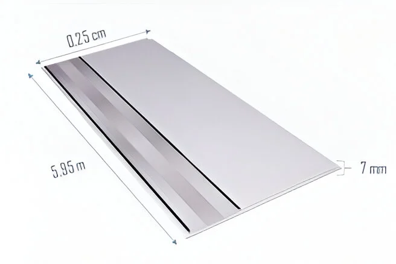
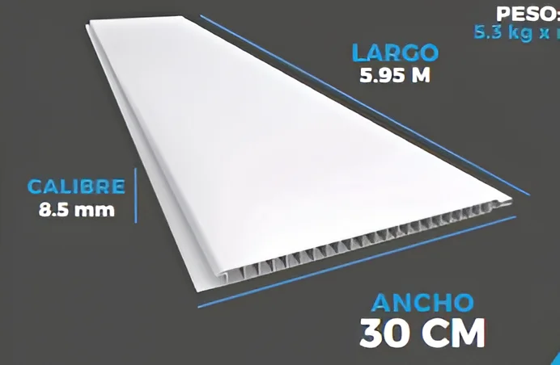

Techo PVC Estándar (25cm)

- FÁCIL Y ECONÓMICO.
- DISEÑO LIGERO Y DURADERO.
- VARIEDAD DE DISEÑOS.
- DOMÉSTICO Y SUPERLAVABLE.
- 65% PVC Y 35% RESINA.
VER DISEÑOS
Techo PVC Premium (30cm)

- MAYOR GROSOR Y RESISTENCIA.
- MAYOR CAPACIDAD DE IMPACTO.
- ACABADO PREMIUM CON MEJOR AISLAMIENTO TÉRMICO.
- IDEAL PARA TRÁFICO PESADO E INDUSTRIAL.
- 80% PVC Y 20% RESINA.
VER DISEÑOS